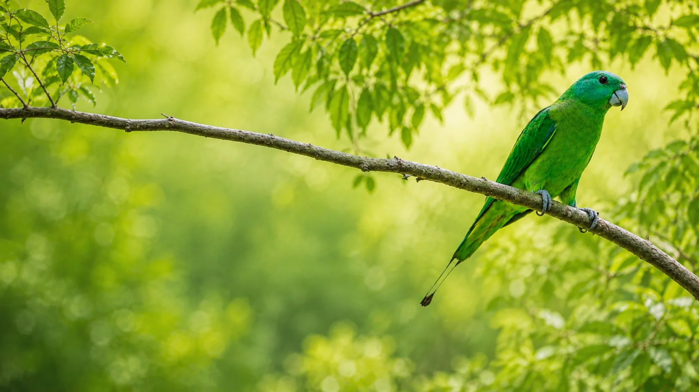
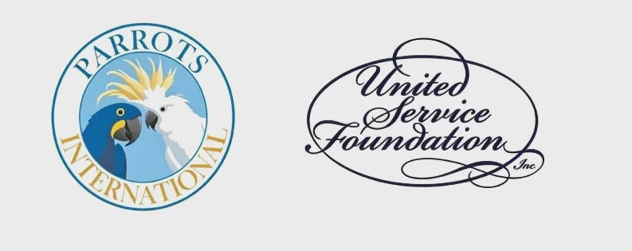
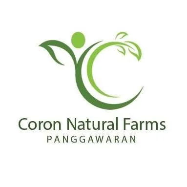
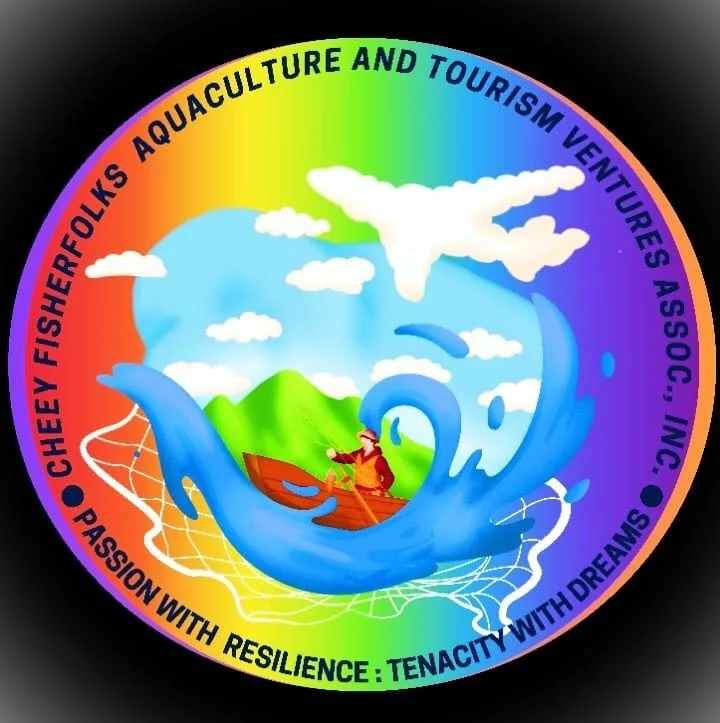
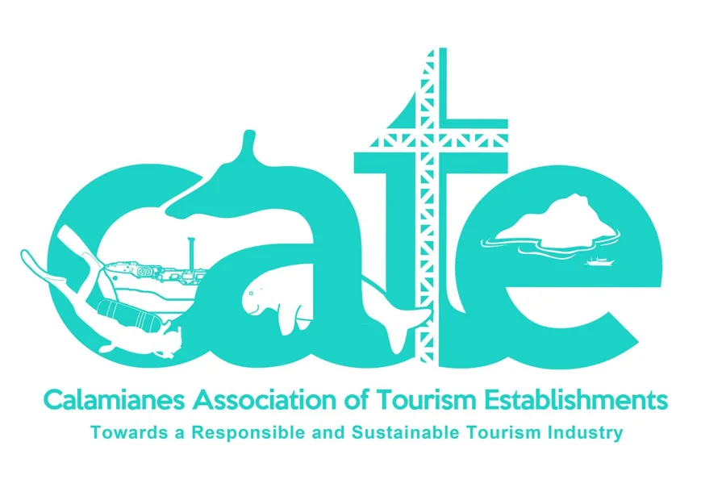
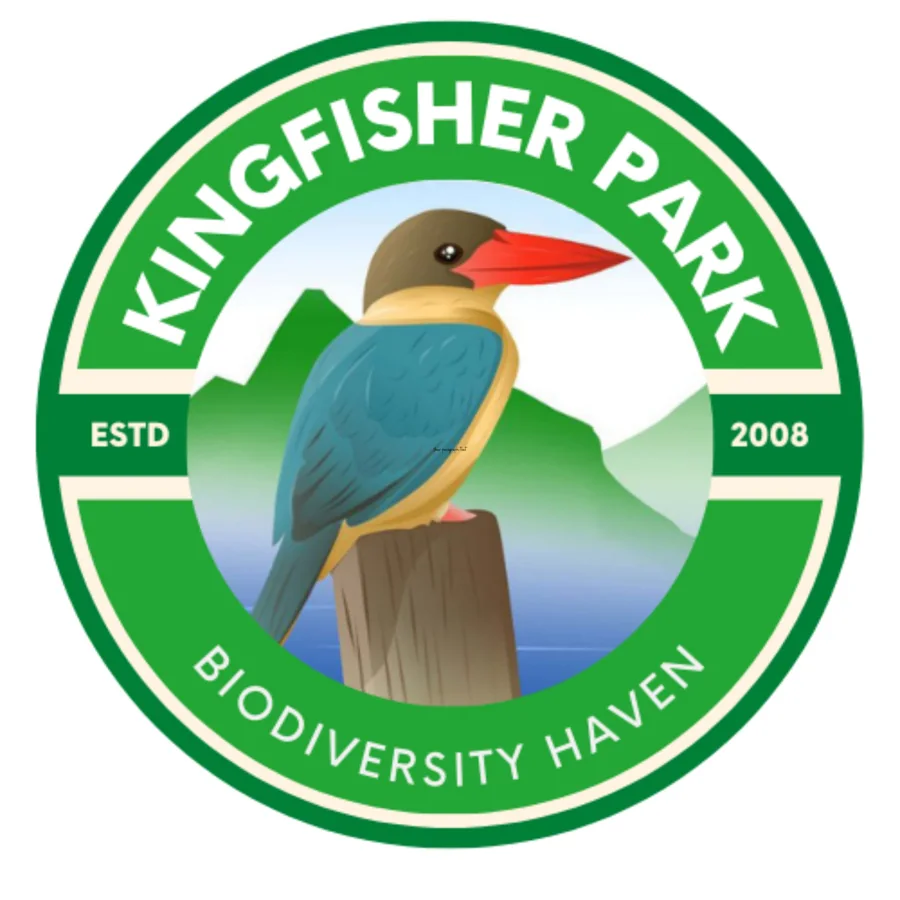

Biodiversity Conservation
Protect habitat, native flora, wildlife, and ecological knowledge across the Calamianes.

Protecting habitat and biodiversity is the starting point for a healthier Calamianes.
The Kilit became RnK's symbol for a conservation approach that connects biodiversity with education, food, livelihoods, and community life across the Calamianes.
Read the RnK storyRnK brings conservation, regenerative food systems, education, and community opportunity together rather than treating them as separate goals.
Protect habitat, native flora, wildlife, and ecological knowledge across the Calamianes.
Build healthier soil and more resilient local food systems that work with biodiversity.
Use schools, gardens, scholarships, and practical learning to build long-term stewardship.
Connect conservation with local ownership, sustainable enterprise, and community participation.
Explore a field-based view of RnK through authentic biodiversity imagery, community landscapes, and stories from students and scholars.
RnK has worked with community groups, conservation organizations, farms, tourism networks, schools, universities, and local institutions.





Connect with Regalo ng Kilit Foundation Inc. to explore partnerships, education support, conservation initiatives, and community collaboration.